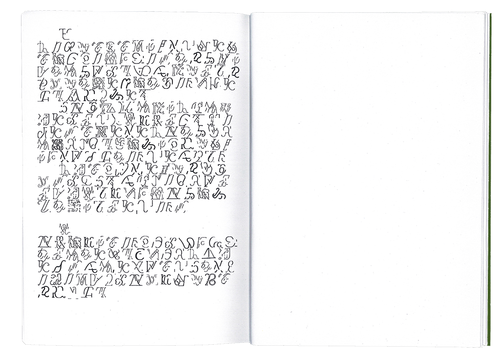
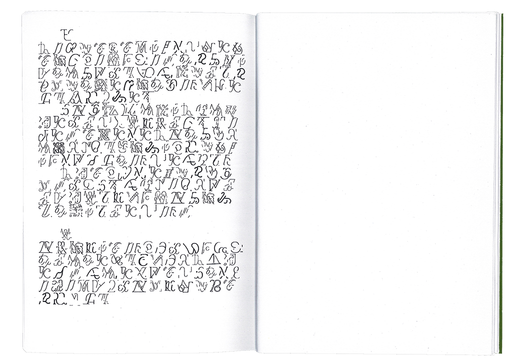
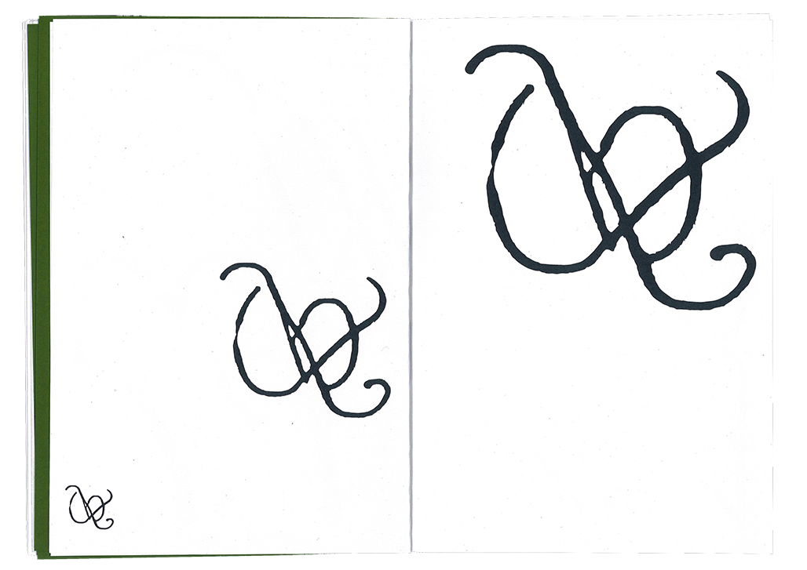
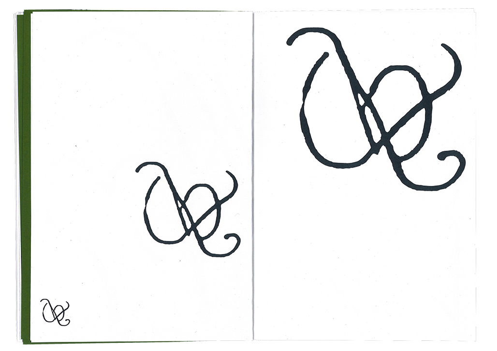

Unletters/Reletters
Installation/Editorial
2024
In a scenario where a significant disconnect exists between humans and nature, misunderstandings and misrepresentations may emerge, potentially creating a sense of distance. To bridge this gap, a machine was used as a mediator, merging two distinct datasets — typefaces from the Google Fonts Library and images of slime mold simulations. Through this process, an AI was trained to produce unrecognizable and new letters, revealing hidden elements in the latent space between humans and nature. Its visual performance is a result of curating, categorizing and sorting, offering the viewers new perceptions and reflections on the shapes of letters, emphasizing form and composition over readability. Can these symbols constitute an alternative language? Are they imaginary logotypes?
In collaboration with Marcel Dziewulski.


 

 
